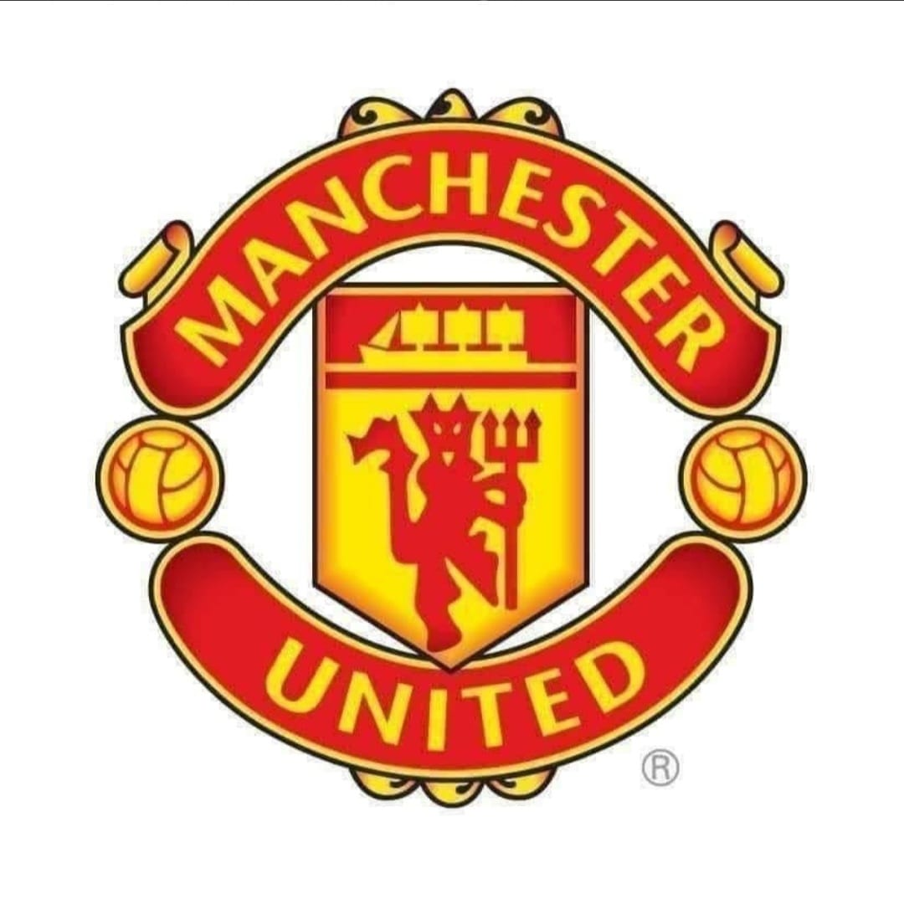
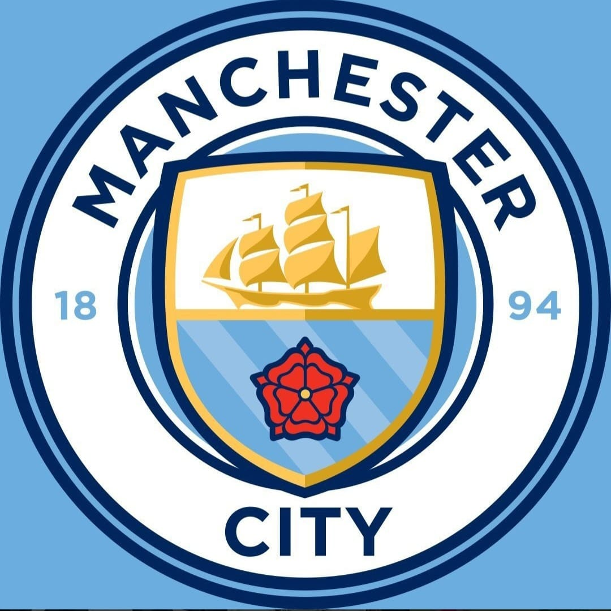
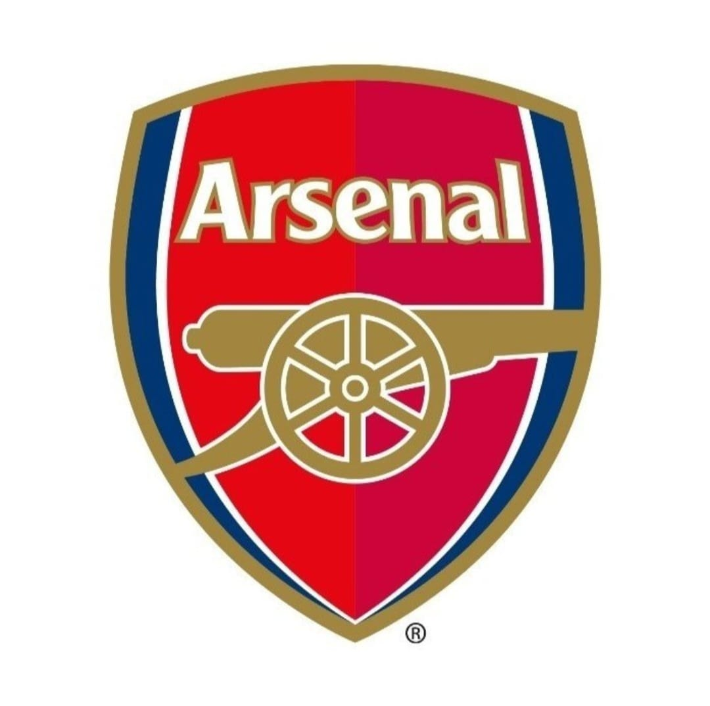
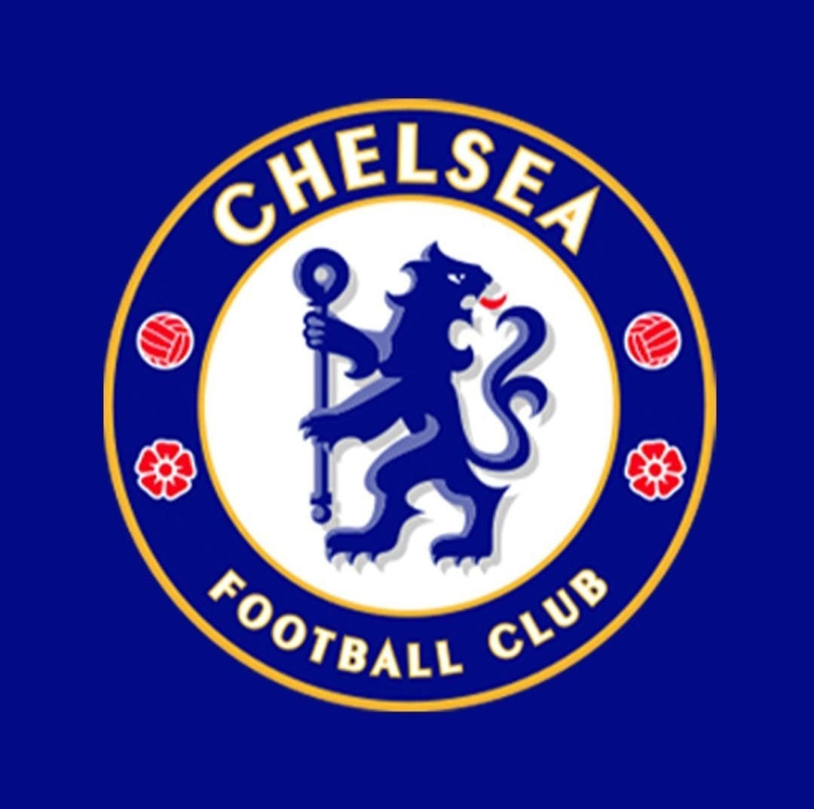
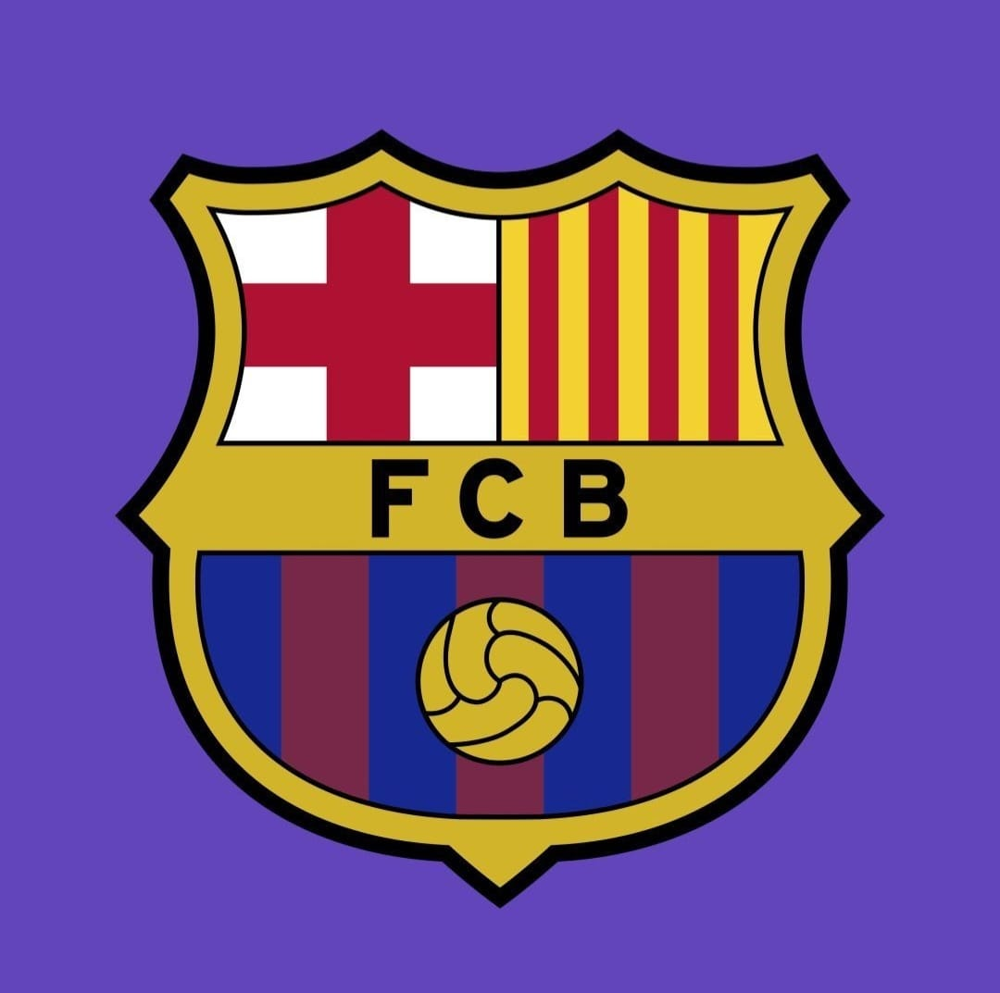
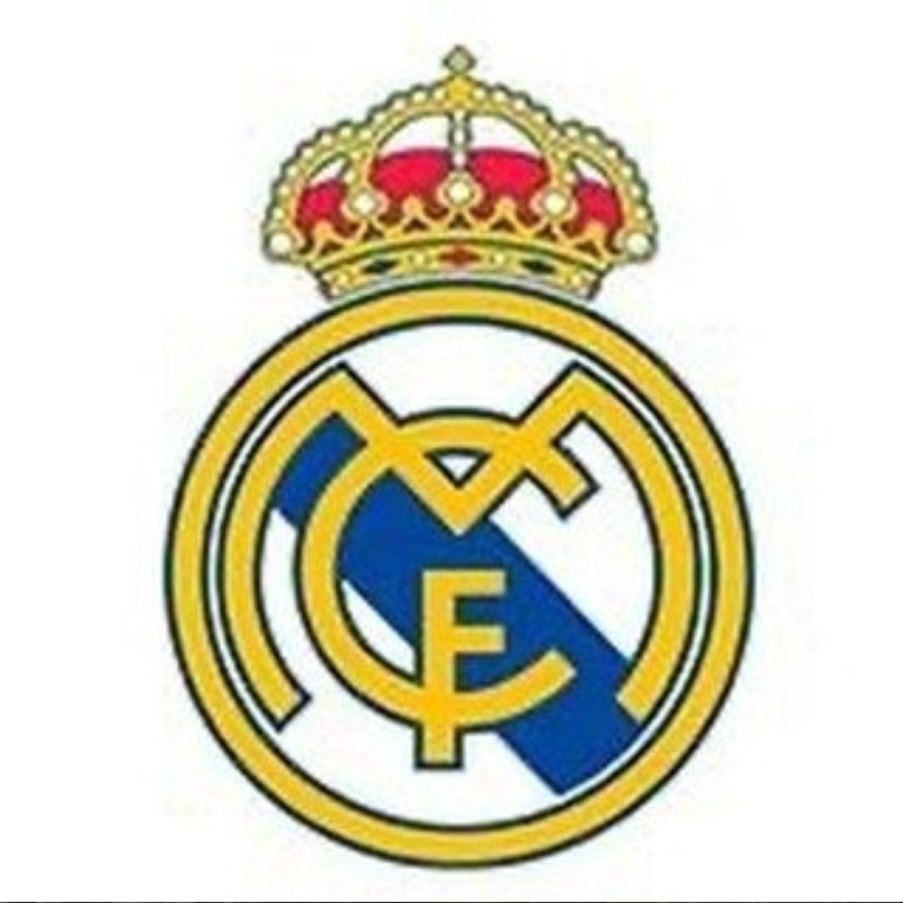
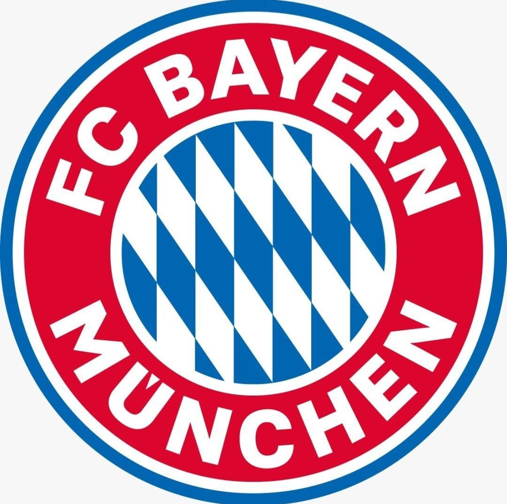

Manchester United is a club in the premier league which is in England,It is found in the city of Manchester alongside their rivals manchester city.

Manchester City is a club in the premier league which is in England,It is found in the city of Manchester alongside their rivals manchester United.

Arsenal is a professional football club based in North London, England. The club was founded in 1886 and has a rich history of success, having won numerous domestic and international titles. Arsenal plays its home matches at the Emirates Stadium, which has a capacity of over 60,000 spectators..

Chelsea is a professional football club based in West London, England. The club was founded in 1905 and has since established itself as one of the most successful clubs in English football history. Chelsea plays its home matches at Stamford Bridge, which has a capacity of over 40,000 spectators.

Barcelona, also known as FC Barcelona or Barca, is a professional football club based in Barcelona, Catalonia, Spain. The club was founded in 1899 and has since become one of the most successful clubs in world football. Barcelona plays its home matches at the Camp Nou stadium, which has a capacity of over 99,000 spectators.

Real Madrid is a professional football club based in Madrid, Spain. The club was founded in 1902 and is widely regarded as one of the most successful football clubs in the world. Real Madrid plays its home matches at the Santiago Bernabéu Stadium, which has a capacity of over 80,000 spectators.
Kenya's national football team is known as the Harambee Stars. The team was founded in 1961 and is controlled by the Football Kenya Federation (FKF).

Bayern Munich, also known as FC Bayern, is a professional football club based in Munich, Germany. The club was founded in 1900 and has since become one of the most successful clubs in European football. Bayern Munich plays its home matches at the Allianz Arena, which has a capacity of over 75,000 spectators.